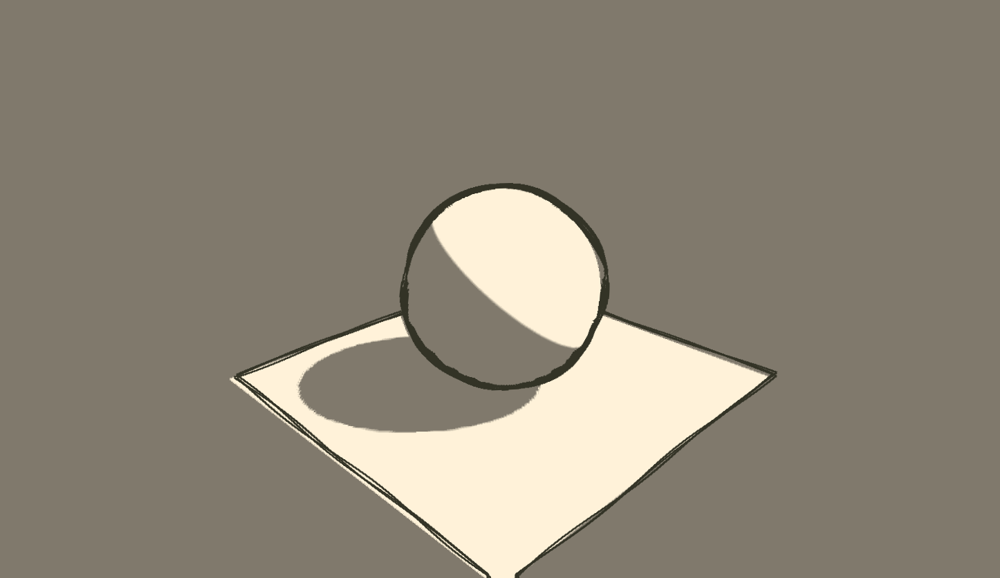

QCA3642 - Introduction to Shaders
Dr. Damian Hills
What is a Shader?
What is a Shader?
A shader is a program that runs on the GPU (the graphic card) of our computer and it’s mostly used to modify the appearance of 3D objects, create light effects for virtual scenes and process images. Shaders perform those task in a very fast and efficient way.
A single shader is actually composed by two programs: a vertex shader and a fragment shader.
On every frame the GPU runs a tiny program called a vertex shader on every single vertex in the geometry. This tiny program calculates the final position of vertexes on the screen then sends them on to a second tiny program called a fragment shader.
The fragment shader is run on every single fragment (pixel) of the final picture on screen. This tiny program calculates the final color of each pixel based on textures, lighting, and other settings.
Uniforms are sent to both vertex shaders and fragment shaders and contain values that stay the same across the entire frame being rendered. A good example of this might be a light’s position.
Attributes are values that are applied to individual vertices. Attributes are only available to the vertex shader. This could be something like each vertex having a distinct colour. Attributes have a one-to-one relationship with vertices.
.....interesting site on shaders
.....intro section
/**
* Multiply each vertex by the model-view matrix and the
* projection matrix to get a final vertex position
void main() {
gl_Position = projectionMatrix * modelViewMatrix * vec4(position,1.0);
}
/**
* Set the colour to a lovely pink.
* Note that the color is a 4D Float Vector, R,G,B and A and each part runs from 0.0 to 1.0
void main() {
gl_FragColor = vec4(1.0, // R
0.0, // G
0.0, // B
1.0); // A
}
}

The surface's facing direction at any point is called its surface normal. The surface normal is a vector that points in the direction the surface is facing.

We’ll update our Vertex Shader to provide each vertex normal to the Fragment Shader. We do this with a varying

In the Fragment Shader we’re going to use the dot product of the vertex normal with a vector that represents a light shining from above and to the right of the sphere. The net result of this gives us an effect similar to a directional light in a 3D package.
With normalised vectors, if they point in exactly the same direction, you get a value of 1. If they point in opposite directions you get a -1. What we do is take that number and apply it to our lighting. So a vertex in the top right will have a value near or equal to 1,
.....generative section
What we will do in the workshops
•Play with ShaderFrog
• Learn to import into a-frame
.....video